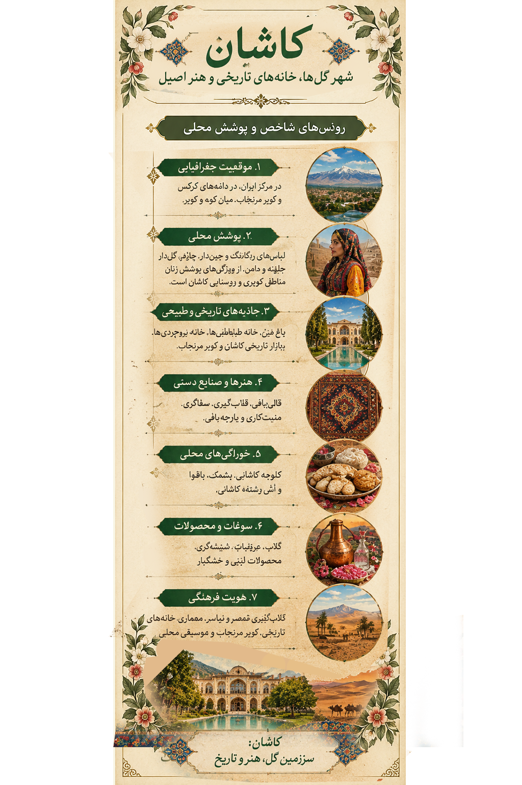

پوشش زنان روستایی Traditional Rural Women's Dress
پوشش سنتی زنان ابیانه از شناختهشدهترین جلوههای لباس محلی در منطقه مرکزی ایران است. روسری بزرگ و گلدار، پیراهن بلند، دامن پُرچین و رنگهای زنده، از ویژگیهایی هستند که در تصاویر و توصیفهای این پوشش دیده میشوند. Abyaneh's traditional women's dress is one of the best-known examples of local clothing in central Iran. A large floral headscarf, a long tunic, a full skirt and vivid colors are among the features associated with this attire.
نقش پارچهها، شیوه بستن روسری و ترکیب لباسها بخشی از هویت بصری این روستا هستند. پوشش میتواند در گذر زمان و میان نسلها تغییر کند؛ بنابراین بهتر است هر بازسازی هنری با عکسها و منابع مردمنگارانه معتبر مقایسه شود. Fabric patterns, the way the headscarf is worn and the combination of garments contribute to the village's visual identity. Clothing can change across generations, so artistic reconstructions should be compared with reliable historical photographs and ethnographic sources.
آثار تاریخی و جاذبهها Historic Sites & Attractions
باغ فین Fin Garden
باغی تاریخی با آبراههها، حوضها، درختان و بناهایی که نمونهای از باغسازی ایرانی را نشان میدهند. A historic garden with water channels, pools, trees and buildings representing the Persian garden tradition.
خانه طباطباییها و خانه بروجردیها Tabatabaei and Borujerdi Houses
خانههایی تاریخی با حیاطهای مرکزی، گچبری، شیشههای رنگی، بادگیرها و تزئینات معماری چشمنواز. Historic houses known for central courtyards, plasterwork, colored glass, windcatchers and elaborate architectural details.
بازار تاریخی کاشان Kashan Historic Bazaar
مجموعهای از راستهها، سراها و تیمچهها که پیوند دیرینه تجارت، معماری و صنایعدستی را به نمایش میگذارد. A network of traditional lanes, caravanserais and covered market halls reflecting the historic relationship between trade, architecture and handicrafts.
روستای ابیانه و تپه سیلک Abyaneh Village and Sialk Mounds
ابیانه با بافت پلکانی و بناهای سرخرنگ خود شناخته میشود. تپه سیلک نیز از محوطههای باستانی مهم منطقه کاشان است. Abyaneh is known for its stepped village layout and reddish buildings. The Sialk Mounds are an important archaeological site in the Kashan area.
سوغات و محصولات محلی Souvenirs & Local Products
گلاب و عرقیات گیاهی از شناختهشدهترین محصولات این منطقهاند. قالیبافی، مخملبافی و زریبافی نیز در تاریخ هنر و تولید پارچه کاشان جایگاه مهمی دارند. Rosewater and herbal distillates are among the region's best-known products. Carpet weaving, velvet weaving and brocade weaving also hold an important place in Kashan's textile and craft heritage.
غذاهای محلی Traditional Foods
گوشت و لوبیا Meat and Bean Stew
خوراکی سنتی و مقوی که در سفرههای محلی کاشان شناخته شده است. A hearty traditional dish associated with Kashan's local cuisine.
شفته کاشانی Kashani Shefteh
یکی از خوراکهای محلی منطقه که با دستورها و چاشنیهای متفاوت در خانوادهها تهیه میشود. A local dish prepared with variations in ingredients and seasonings across households.
خورش نخودآله Nokhod-aleh Stew
از غذاهای سنتی معرفیشده در فرهنگ خوراک کاشان. دستور دقیق آن ممکن است در خانوادهها متفاوت باشد. A traditional dish mentioned in accounts of Kashan's food culture. Its exact preparation may vary between households.
شیرینیها و خوراکیهای شیرین Traditional Sweets
جوزقند Jozghand
شیرینی سنتی تهیهشده از میوه خشک و مغزها که در برخی مناطق اطراف کاشان، بهویژه برزک، شناخته میشود. A traditional sweet made with dried fruit and nuts, known in some areas around Kashan, particularly Barzok.
شیرینیهای محلی و فرآوردههای گل محمدی Local Sweets and Rose Products
شیرینیهای محلی و فرآوردههای معطر گل محمدی، بخشی از تجربه خوراکی و سوغات این منطقه هستند. Local pastries and fragrant damask-rose products form part of the region's culinary and souvenir traditions.
لیبل اطلاعاتی اثر Artwork Information Label
برای مشاهده جزئیات معرفی منطقه، لیبل همراه اثر را در این بخش ببینید. View the artwork's information label below for a concise introduction to the region.

منابع و مطالعه بیشتر Sources & Further Reading
- UNESCO World Heritage Centre — اطلاعات مربوط به میراث جهانی و محوطههای تاریخی — World heritage and historic sites
- Encyclopaedia Iranica — پژوهشهای تاریخی و فرهنگی ایران — Scholarly resources on Iranian history and culture
- Visit Iran — اطلاعات گردشگری ایران — Iran tourism information
توضیح: معرفی لباس در این صفحه یک روایت فرهنگی کلی است. برای انتساب قطعی جزئیات پوشاک به یک دوره تاریخی یا روستای خاص، باید از تصاویر مستند و پژوهشهای تخصصی پوشاک استفاده شود. Note: The clothing section offers a general cultural account. Attributing specific garment details to a particular historical period or village requires documented photographs and specialized clothing research.